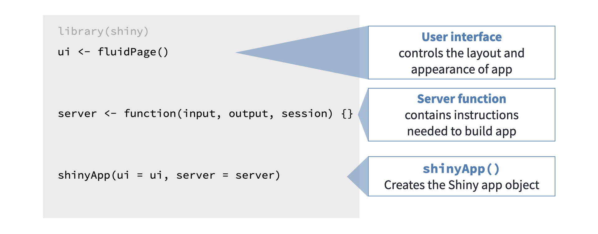

library(shiny)
ui <- fluidPage(
numericInput(
inputId = "numero",
label = "ingrese un número",
value = 0
),
textOutput(
outputId = "salida"
)
)
server <- function(input, output, session) {
output$salida <- renderText({
input$numero + 1
})
}
shinyApp(ui, server)Introducción a Shiny
Crea experiencias interactivas con datos📊🚀
Shiny es una herramienta que permite a los usuarios de R crear aplicaciones web interactivas sin necesidad de aprender programación web.
Hay un problema común para los analistas: necesitan presentar sus resultados, pero esto a menudo implica aprender tecnologías web como JavaScript, CSS, HTML, React, Vue u otras similares. La otra opción, que no sé si es mejor o peor, es tener que trabajar en conjunto con un desarrollador web que no entiende mucho de datos. Esto termina en decenas de reuniones y horas gastadas en ponerse de acuerdo sobre cómo desarrollar la web.
Entonces, Winston Chang tuvo una de las ideas más geniales: ¿y si todo esto se pudiera hacer sin salir de RStudio y usando R? Bueno, eso es Shiny: superpoderes de desarrollador web para usuarios de R.
Anatomía de una aplicación Shiny
Shiny se compone de dos partes principales: la interfaz de usuario (UI) y el servidor (Server). Cada uno tiene un rol específico en la creación de una aplicación Shiny.
Interfaz de Usuario (UI)
La UI define la apariencia y el diseño de la aplicación. Es el lugar donde se especifica cómo se verá la aplicación y cómo los usuarios interactuarán con ella.
Se crea usando funciones de Shiny que generan los elementos de la interfaz, como fluidPage(), sidebarLayout(), mainPanel(), input y output.
Especifica la disposición de los controles de entrada (como cuadros de texto, botones y deslizadores) y los elementos de salida (como gráficos y tablas).
Servidor (Server)
El servidor contiene la lógica de la aplicación. Aquí se definen las operaciones que se realizan en respuesta a las interacciones del usuario.
Se define como una función (server function) que toma dos argumentos: input y output. input contiene los valores introducidos por el usuario a través de la UI. output contiene las instrucciones para generar el contenido que se mostrará en la UI, como gráficos o tablas.
Dentro del servidor, se utilizan funciones reactivas y observadores para actualizar dinámicamente los elementos de la interfaz en respuesta a los cambios en los datos de entrada.

Esta app, aunque parece extremadamente sencilla, es fundamental para entender cómo funciona una aplicación Shiny. Hasta que no tengas claros los siguientes conceptos:
- input
- output
- render
- reactividad
- ciclo de vida de un dato
no vale la pena intentar construir algo más complejo.
Inputs y Outputs
Shiny nos ofrece una larga lista de widgets para leer datos (inputs) o mostrar datos (outputs). Puedes verlos en la siguiente lista: Widget Gallery.
library(shiny)
ui <- fluidPage(
numericInput(
inputId = "numero",
label = "ingrese un número",
value = 0
),
selectInput(
inputId = "colores",
label = "Selecciona un color",
choices = c("red","blue","green"),
selected = "red"
),
sliderInput(
inputId = "edad",
label = "Ingrese su edad",
min = 20,
max = 50,
value = 25
),
textInput(
inputId = "nombre",
label = "Ingrese su nombre"
)
)
server <- function(input, output, session) {
}
shinyApp(ui, server)Renders
Antes de poder entender bien los outputs, hay que comprender qué es un render. Esto funciona más o menos así: cuando en R hacemos un cálculo, un gráfico, un número o cualquier otro tipo de resultado y queremos mostrarlo en el navegador como una aplicación Shiny, se debe hacer una traducción de R a un lenguaje que el navegador (Chrome, Firefox, Safari) entienda. El encargado de hacer esa traducción es el render.
Por esta razón, tenemos un render especializado para cada tipo de output. Por ejemplo, si queremos enviar valores a un output que es un texto, debemos llamar a renderText. Si fuera un gráfico, usaríamos renderPlot. Y así para cada tipo de output. Siempre, siempre vamos a tener asociado un render; son inseparables.
library(shiny)
library(dplyr)
pinguinos <- datos::pinguinos
numericas <- colnames(select(pinguinos,where(is.numeric)))
categoricas <- colnames(select(pinguinos,where(is.factor)))
ui <- fluidPage(
selectInput(
inputId = "x",
label = "Selecciona un variable (x)",
choices = numericas,
selected = numericas[1]
),
selectInput(
inputId = "y",
label = "Selecciona un variable (y)",
choices = numericas,
selected = numericas[1]
),
sliderInput(
inputId = "size",
label = "Selecciona un tamaño",
min = 1,
max = 8,
value = 3
),
selectInput(
inputId = "color",
label = "Selecciona un variable (color)",
choices = categoricas,
selected = categoricas[1]
),
plotOutput(
outputId = "grafico"
)
)
server <- function(input, output, session) {
output$grafico <- renderPlot({
ggplot(
data = pinguinos,
mapping = aes_string(
x = input$x,
y = input$y,
color = input$color
)
)+
geom_point(size = input$size) +
theme_minimal()
})
}
shinyApp(ui, server)Reutilización
Este trabajo está licenciado bajo la Licencia Internacional Creative Commons Atribución-NoComercial-SinDerivadas 4.0 (CC BY-NC-ND 4.0). Eres libre de compartir este material siempre que otorgues el crédito adecuado, no lo utilices para fines comerciales, y no hagas obras derivadas.
(Ver Licencia)
Derechos de autor
Copyright nombre de los cursos. 2024. Todos los derechos reservados.